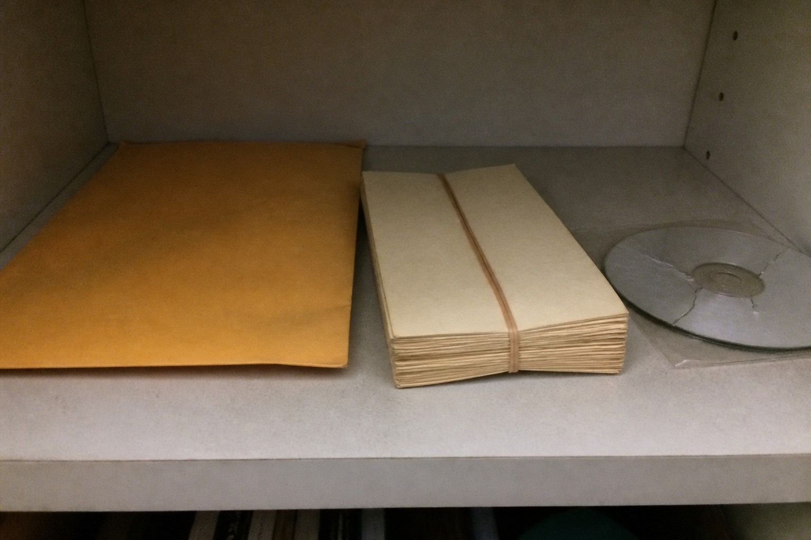

RideAlong notice 2009 original

At night, take people. Deliver to the address on the post. Doesn't matter who holds the name.
Don't ask who it is on the road. If you ask, that trip redirects under the asker's name.
The 2016 revision changed the second sentence to follow the domain. Original wasn't voided. Just not hung on the board. File: OldNotice.
Scan